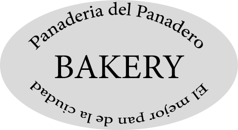
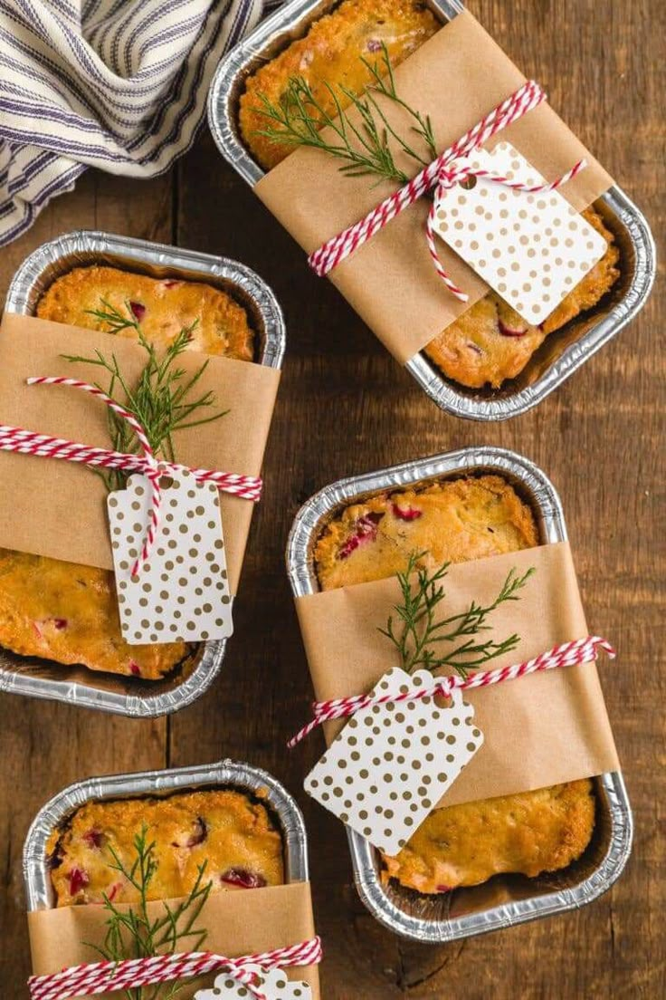
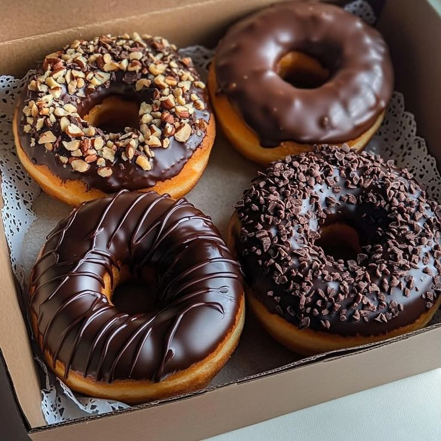
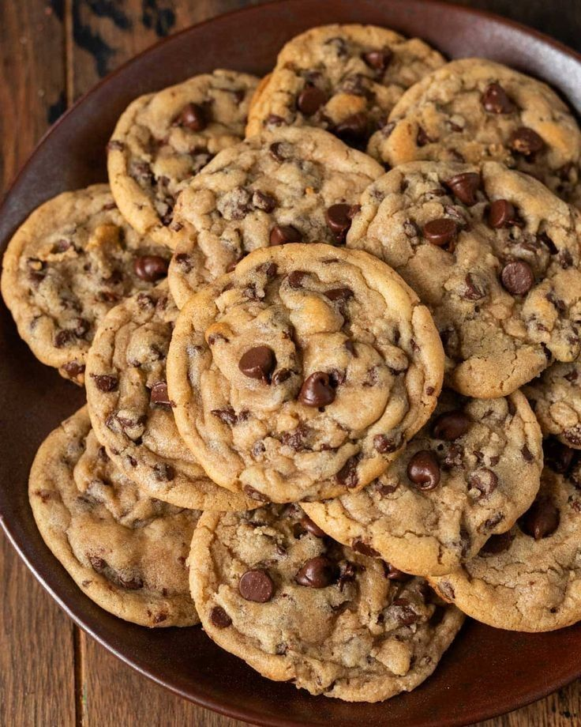
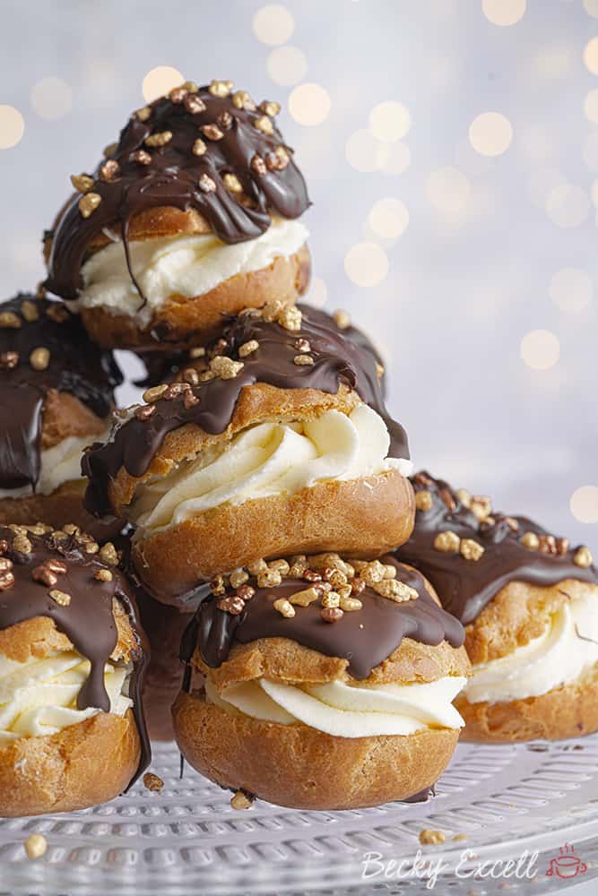
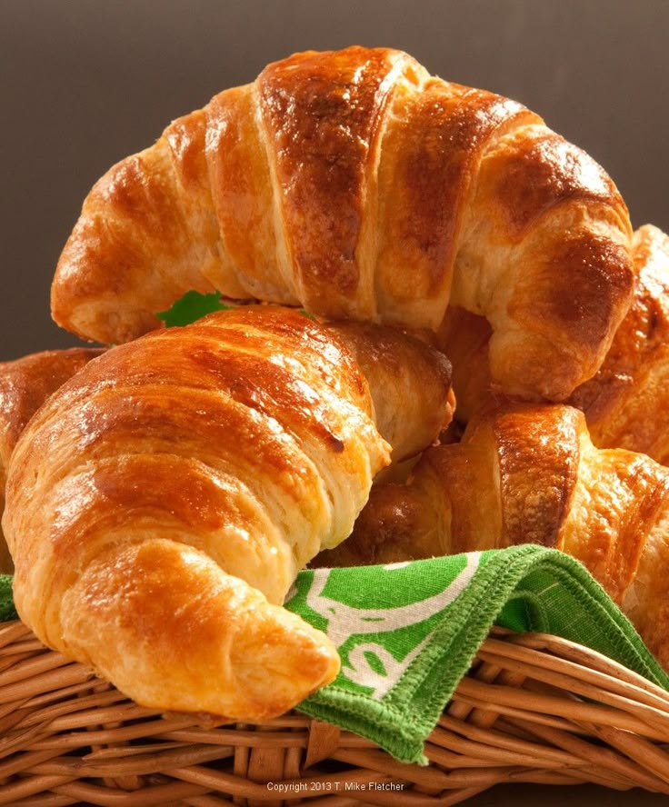

Artisan Breads
Panes con masa madre, corteza crujiente y miga aireada. Ideal para desayunos y tablas.
View Bakery
Panadería artesana: desde croissants dorados hasta pasteles personalizados. Hecho con ingredientes locales y técnicas tradicionales.
Order NowNuestra panadería combina recetas clásicas con técnicas modernas para crear productos deliciosos, frescos y hechos a mano. Cada pieza recibe atención personalizada desde la masa hasta el horneado.
Panes con masa madre, corteza crujiente y miga aireada. Ideal para desayunos y tablas.
View Bakery
Croissants, daneses y bollería dulce elaborada diariamente con mantequilla de calidad.
View Pastry
Tartas personalizadas para celebraciones. Diseños bonitos y sabores memorables.
View CakesPasa por nuestra tienda, prueba una porción y llévate tu pan favorito. También ofrecemos pedidos para recoger o envío local.
Ver la tienda



